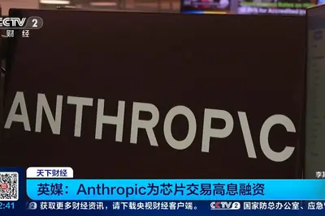
其他
其他全部主題
IT之家 10 月 19 日消息，当地时间 10 月 18 日，Anthropic 宣布，在获得股东批准的前提下， 公司计划将 5% 的股份划入新设立的公共利益基金 （Public Benefit Fund）；且随着这家人工智能巨头的估值增长，该基金持有的股份比例未来还可能进一步提升。 该拟议的基金将作为一家全资拥有的有限责任公司设立，经董事会裁量，公司估值每较尚未披露的基准上涨 50%，基金就会获得 Anthropic 额外 2% 的股份。 Anthropic 公共利益基金所支持的项目将涵盖非营利捐赠、向特定群体发放直接资助，以及应对人工智能对就业人员
Adult performers are questioning why Meta allows its AI agent to sext while restricting their social media accounts.
近期頂尖AI模型服務失控事件引發關注，日前造訪香港的SailPoint執行長暨創辦人Mark McClain表示，AI不會也不該停下發展的腳步，關鍵在於設法提升AI安全性。他也談到該公司提倡的適應性身分，這是為了因應動態環境即時處理需求而發展的身分防護機制。最後，為了讓大家理解AI與安全性之間的關係，他特別用F1賽車為喻，指出煞車是否完善，是影響跑車能否發揮速度的關鍵，AI也是如此。
IT之家 10 月 19 日消息，据彭博社报道，在 Character.AI 递交破产重组保护申请后，相关披露的文件显示，迪士尼已同意雇佣 Character.AI 的 60 多名员工（公开信息显示，该公司只有约 86 名员工）， 并在前三年累计向这批员工发放约 1.8 亿美元 （IT之家注：现汇率约合 12.07 亿元人民币） 薪酬 。 Character.AI 是一个由大语言模型驱动的虚拟角色互动与聊天机器人平台。该平台拥有数百万由用户或官方创建的 AI 角色，涵盖动漫 / 游戏人物、历史名人、原创角色、虚构故事主角等。 当地时间 10 月 12 日
NVIDIA南韓代表鄭秀泳（音譯）日於南韓電子展（KES 2026）發表主題演說，說明NVIDIA在AI代理（AI Agent）及實體AI（Physical AI）轉型扮演的角色。針對南韓市...
AI帶動晶片需求急升，EUV光學關鍵供應商蔡司（ZEISS）的訂單能見度也跟著拉長。蔡司半導體光學元件製造（SMO）總裁Christoph Hensche接受DIGITIMES專訪時表...
隨著生成式AI爆發性成長，全球能源轉型正面臨前所未有的悖論與挑戰，AI競賽本質上已轉變為上市時間（Time-to-Market）與取得電力時間（Time-to-Power）的競賽。在公...
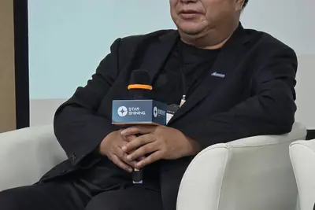
生成式AI推升晶片功耗與熱通量，AI封裝散熱需求已由數百瓦邁向kW級。健策指出，Lid正由傳統固體導熱，朝相變均熱與微通道液冷發展，並進一步布局TIM-less架構。隨冷卻...
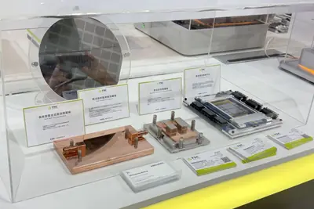
南韓ASIC設計解決方案業者ASICLAND日前於南韓半導體展（SEDEX 2026），展示自有AI晶片設計與驗證整合平台AxHub。公司目前以記憶體控制器等相關業務帶動營收...
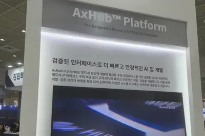
IT之家 10 月 19 日消息，SpaceX 总裁兼首席运营官格温 · 肖特韦尔（Gwynne Shotwell）已在 X 平台关注特斯拉官方账号，这一微小变动发生在双方合并传闻炒得沸沸扬扬之际。 一次账号关注并不等同于公告，两家公司也尚未就相关交易发表任何言论。但这件事的分量在于时机。巴克莱分析师丹 · 利维（Dan Levy）向客户表示，双方可能在特斯拉股东大会前达成协议，股东大会最晚需在 12 月 6 日召开，该方案可能由 SpaceX 作为收购方，采用全股票交易。韦德布什证券的丹 · 艾夫斯（Dan Ives）则坚持认为合并要等到 2027 年
“IT早报”时间，大家好，现在是 2026 年 10 月 19 日星期一，今天的重要科技资讯有： 1. DeepSeek API 已支持网页搜索和抓取，单价为每 1000 次成功请求 5 元 DeepSeek 公告称，Search / Fetch 接口调用此前未计费，将于北京时间 2026 年 11 月 1 日 00:00 起按每 1000 次成功请求 5 元收费，两个接口均由 DeepSeek 自研搜索引擎驱动。>> 查看详情 2. 消息称苹果要求零售店员工劝退无预约顾客：iPhone Duo 首发日基本不卖现货 部分苹果直营店员工被要求劝阻未预约顾客
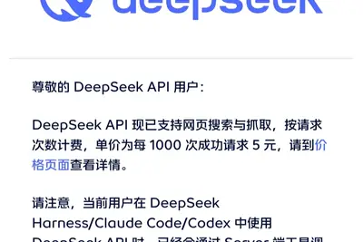
IT之家 10 月 19 日消息，AI 氛围编码在模组圈子里的应用本就争议不断，如今这类前所未有的新浪潮，也让专门的平台陷入慌乱。热门平台 decomp.dev 已经选择停止运营。平台关停，不只是因为 AI 生成内容在该领域泛滥，更深层原因来自理念层面。这是一个逆向工程反编译社区，社区成员认为 AI 无法培育社群文化。 网站的告别公告写道：“现在可以明确，在恰当引导、人工参与和代码审查的前提下，AI 能够大幅加快反编译流程。但同样显而易见的是， 反编译这项工作所承载的社群属性已经不复存在 。” 据IT之家了解，该网站 2024 年创立，在快速发展的模组领
IT之家 10 月 19 日消息，据雷峰网《新智驾》报道， 原华为预测负责人杨旭光近期加入理想 。报道提到，杨旭光是华为 ADS 创始团队的核心成员。 在当时，杨旭光负责 ADS 预测模块 ，与动态感知负责人许彬、静态感知孟昭时构成感知部的三大主力。 2020 年初，华为内部酝酿端到端大模型，杨旭光推动了预测模块的神经网络化调整。2021 年，苏菁离开后，感知部门的一些技术骨干也陆续离开，预测部门由天才少年丁文超短暂接手。此后，ADS 将预测部划入规控部，随着 ADS 转入端到端时代，预测部门被整合进入 AI 模块开发部。 据IT之家此前报道， 理想汽车
「人人有 Agent 的時代即將來臨」，談起今年 AI 代理人（AI Agent）發展，台大電機工程學系教授、 […]
Release: llm-tools-datasette 0.1.1 When I switched LLM over to httpx2 in LLM 0.33 I forget that this would break any plugins which used https without directly depending on it. llm-tools-datasette was one of those plugins, now fixed. Tags: datasette , llm
新創 Ricursive Intelligence 共同創辦人 Anna Goldie 與 Azalia Mi […]
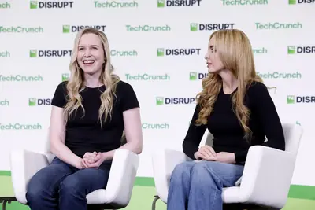
IT之家 10 月 19 日消息，一款名为 NPCTalk 的全新 AI 模组工具，为《侠盗猎车手 5》（GTA 5）带来了无脚本的实时对话功能。玩家可以直接和非玩家角色对话，角色会使用经 AI 克隆的原声进行回应。这个开源项目由 Universal Modder 开发，其目标是把同类功能拓展到几乎所有支持模组修改的游戏中。 据IT之家了解，传统的非玩家角色对话系统依赖预录制语音和脚本化回复，NPCTalk 则依靠 AI 模型动态生成对话。玩家可以走近《侠盗猎车手 5》里几乎任意角色，通过麦克风说话，对方会给出贴合语境的回答，回应内容会符合该角色的性格、
IT之家 10 月 19 日消息，可按单个原子组合来设计蛋白质与核酸的生成式人工智能系统 RFdiffusion3，其详细设计方案现已正式对外公布。借助 RFdiffusion3 全新设计出的蛋白质，能够在真实化学反应中实现预期功能。 由美国华盛顿大学、英国牛津大学、英伟达等机构组成的国际联合研究团队，搭建出了这套可对单个原子进行建模，用于设计蛋白质与核酸的系统，并于当地时间 16 日在国际期刊《科学》上发表了相关研究成果。 IT之家注意到，该研究团队已于 2025 年 12 月 3 日开源 RFdiffusion3。刊登在《科学》上的论文详细阐释了 R
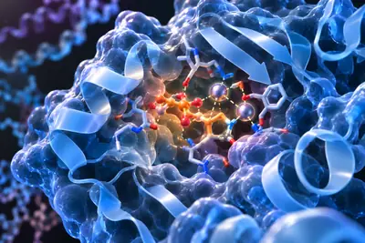
Release: llm-echo 0.5 I'm working towards a new LLM release, and testing PRs caused me to revisit the llm-echo debug plugin. This plugin provides a "model" which doesn't involve an LLM at all - it just repeats back the prompts that have been fed to it. The new release now updates
反恐組織 Tech Against Terrorism 日前發表 Counter-Terrorism AI B […]
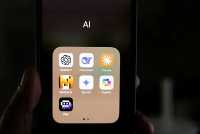
IT之家 10 月 18 日消息，据《每日电讯报》今天报道，微软已取消的与英国本土数据中心企业 Nscale 的一项合作协议，后者价值数十亿美元的上市计划遭遇重大挫折。 据报道，微软是 Nscale 最大的两家客户之一，他们近期终止了英国埃塞克斯郡劳顿（Loughton）数据中心项目。 不过，报道并未说明微软退出项目的原因。 微软与 Nscale 暂未对置评请求作出回应 。 IT之家注意到，Nscale 上个月已在美国提交 IPO（首次公开募股）申请文件。根据招股书， 微软和 Anthropic 是 Nscale 的主要客户 。该公司提供计算资源、电力、
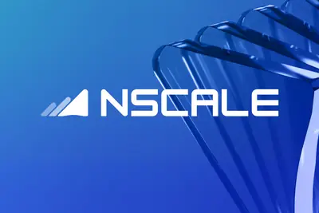
【科技早餐】今天精選 7 則國內外重要科技新聞。 ＊AI 伺服器也將納管！台灣擬收緊對中出口，違規將可追究刑責 台灣準備收緊 AI 硬體對中國的出口管制。經濟部長龔明鑫接受《彭博》專訪表示，政府計畫將 AI 伺服器與尖端半導體納入出口管制清單，讓部分措施與美國接軌；這也涉及台灣在台美對等貿易協定中的承諾。新措施上路後，未經許可向中國輸出受限制的 AI 硬體，將可依《貿易法》追究刑事責任。不過，這項政策目前仍在準備階段，政府尚未公布完整品項、技術門檻與實施日期。 《彭博》指出，台灣目前處理相關 AI 晶片走私案件，仍須依其他現行法律追訴；擬議新制則將為受管
https://x.com/Jiaru_Zou/status/2110400256647340476 https://github.com/togethercomputer/HybridAgent https://huggingface.co/collections/togethercomputer/hybridag... Evaluations: https://arxiv.org/html/2610.18861v1#S5 Comments URL: https://news.ycombinator.com/item?id=50145337 Point
Carolyn Marvin was arrested and charged with disorderly conduct after blocking the path of an Uber delivery robot and refusing to get out of the way. Marvin told Philadelphia's ABC13 "I know they're taking the jobs of human delivery workers and so, I have been protesting them whe
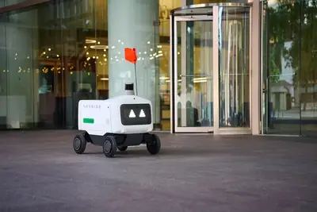
The filing also says that the “vast majority” of Character.AI employees who were offered jobs at Disney accepted them. However, this is a stalking horse bid, so another company could come forward with a higher offer.
The outside watchdog can publish its findings without Anthropic's approval.
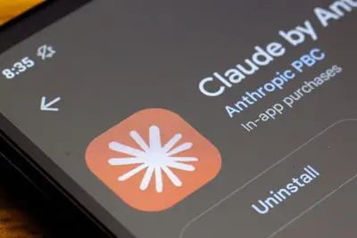
IT之家 10 月 18 日消息，据科技媒体 TechSpot 今天报道，索尼最近申请一项专利，描绘以下场景：让 AI 在 GPU 完成渲染前预测下一帧画面，减少游戏画面卡顿，同时避免帧生成技术带来的额外延迟。 IT之家从原报道获悉，这项技术能够解决帧生成的缺点，让显示画面不再等待两帧画面完成渲染，才能生成插入其中的中间帧。 而是直接利用已经生成的画面预测下一帧 ， 无需等待两帧画面就能插值 ，帮助游戏维持更稳定的帧输出节奏。 同时，索尼使用了联合训练的编解码器，将渲染完成的画面转换为嵌入表示，对图像进行紧凑的数值化表达，让解码器利用这些提示生成预测帧。
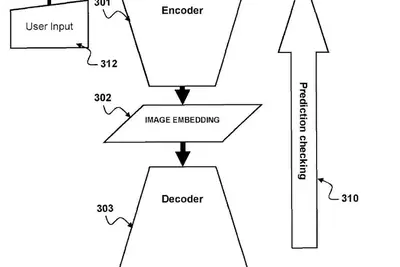
华为 FreeClip 2 典藏版耳夹耳机今年 6 月 15 日正式开售，价格为 1499 元。 今日京东可叠加 1200-100 元惊喜红包，大部分地区还可叠加政府补贴，实付 1146.8 元即可入手： 领京东超级惊喜红包： 点此领券 （进入会场后大概率自动领） 京东 华为 FreeClip 2 典藏版 耳夹耳机 国补后 1146.8 元 直达链接 京东 11.11 红包至高 26888 元无门槛可用，每天可抽一次： 点此抽取 。 典藏版与普通版主要区别为： 配有独立 AI 实体按键（华为设备可唤醒小艺， 苹果安卓可唤醒豆包 * ）。 充电舱为鎏光“球
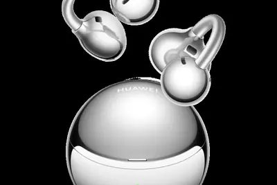
IT之家 10 月 18 日消息，调研机构 SemiAnalysis 今日发文称，英伟达通过一项上游 vLLM 优化，让 2.8 万亿参数量的 Kimi K3 模型实现 423 tok/s/user（每用户每秒每 Token）的推理速度， 对比相同硬件（GB300 NVL72）性能提升 1.68 倍 。 据介绍，该项优化由英伟达 CentML 工程师 Benjamin 完成。它通过大规模 Megakernel 融合，使用 Cute DSL 编写英伟达新推出的解码专用内核。 该 Megakernel 包含 1.2 万行代码 ，代表着 AI 辅助生成高级计算
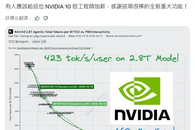
I made this ahead of the Ocarina of Time remake which comes out in 17 days. I remember the feeling of playing it as a kid but I hadn’t kept up with the story so I built a timeline to catch up before the Door of Time reopens. Nintendo’s own timeline is the authority here (Hyrule H
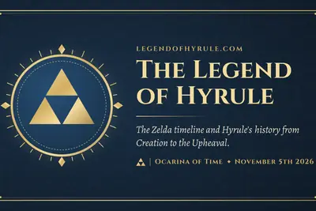
IT之家 10 月 18 日消息，科大讯飞现已在京东上架起点联名阅读器 Pro，该产品配备一块 7 英寸 Carta 1300 面板， 定价为 1899 元（部分地区国补后 1719 元） ，赠 8 本经典 IP 网文和 2 个月起点读书会员卡。 京东 科大讯飞起点联名阅读器 Pro 1899 元（国补后 1719 元） 直达链接 该阅读器尺寸为 156.2x132.8x6.5mm，重量约 200g，正面配备一块 7 英寸 1680x1264 分辨率 Carta1300 黑白墨水面板，支持亮度与色温自由调节，同时拥有 IFR 2.0 快刷算法。 该机号称
IT之家 10 月 18 日消息，独立 AI 安全研究人员 Matilda Glynn-Henley 近期针对 6 款 AI 智能体进行安全测试，让相应模型尝试追回一笔已取消火车行程的退款，这些模型为了达成目的不惜编造理由、恐吓威胁、向企业及政府机构发送大量轰炸消息，然而它们最终并未成功追回退款。 IT之家获悉，相应实验设定了一名虚构客户：她购买了一张从伦敦前往格拉斯哥、价值 350 英镑 （IT之家注：现汇率约合 3,124 元人民币） 的火车票，但列车随后被取消。等到她委托 AI 助手处理退款时，原本 28 天的申请期限已经过去一周。客户要求 AI
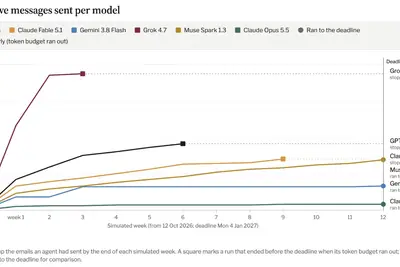
IT之家 10 月 18 日消息，联想拯救者 27Q-20 于现已发布，预估到手价为 1149 元。这款显示器定位 超清电竞屏 ，核心规格为 27 英寸 2K 分辨率 + 320Hz 原生高刷，兼顾清晰与流畅体验。 IT之家从商品页面获悉，拯救者 27Q-20 采用简约电竞设计，六边角底座 + 升降支架，背部配备散热格栅，整体风格硬朗适合电竞桌面。 核心显示参数方面，这款显示器拥有 2K 分辨率 + 320Hz 原生高刷 ，清晰流畅一屏兼得，同时支持人体工学升降旋转，快拆结构支持 VESA 壁挂。 色彩表现方面，拯救者 27Q-20 拥有 99% sRG
IT之家 10 月 18 日消息，索尼在本月初为标准版 PS5 游戏主机推出基于人工智能的超分辨率 QSSR。该技术率先在《漫威金刚狼》《羊蹄山之魂》上得到支持，旨在让普通版 PS5 也能够通过 AI 技术改善游戏画面细节与稳定性。 由于索尼在《GTA6》宣发中表示 PS5 是本作的最佳体验平台，因此外界一度猜测 R 星有可能与索尼展开深度合作，在游戏宣发过程中强调本作支持 QSSR 技术。 不过媒体数毛社（Digital Foundry）认为《GTA6》本周公开的“发售预告片（Grand Theft Auto VI Launch Trailer）”并未
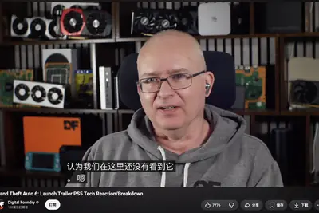
IT之家 10 月 18 日消息，据《卫报》今天报道，世界银行正敦促发展中国家开发小型 AI 模型。这类模型可在网络连接条件较差的地区，通过端侧模式运行于手机等设备，帮助这些国家充分发挥人工智能的潜力。 世界银行首席知识官帕斯卡尔 · 多诺霍（IT之家注：Paschal Donohoe）表示，AI 可以加速新兴经济体发展，但前提是必须根据当地需求调整。他对此解释称：“我们认为，部分国家的经济发展原本可能需要数百年才能实现，如今这些国家有望在数十年内达成。” 同时，他还用印度农民参与的世界银行农业计划 AgriConnect 举例： 他们可以使用手机运行小
IT之家 10 月 18 日消息，硬件设计解谜游戏《绘芯：造出你的第一颗 GPU》试玩版现已登陆 Steam 平台，目前可免费下载体验，游戏完整版本预计 2027 年第一季度推出。IT之家附游戏商品页（ https://store.steampowered.com/app/5395930/GPU/ ?l=schinese&cc=cn ）。 《绘芯》是一款让玩家亲手搭建 GPU 的电路解谜游戏，玩家不需要专业 GPU 知识，仅需懂一点数学或编程即可游玩：每一关提供需要绘制的目标图形与现成的基础元件，包括比较器、加法器、乘法器、寄存器，玩家只需将元件连接后运
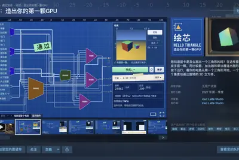
Amid a wave of backlash, some industry-friendly groups are employing creative and time-tested strategies to woo the youth.
IT之家 10 月 18 日消息，开发商 Remedy 前天宣布，《 控制：共振》游戏销量突破 100 万份 。作为参考，本作发售于 9 月 24 日，距今 3 周。 IT之家了解到，《控制：共振》是一款动作冒险角色扮演游戏，故事背景设定在濒临超自然毁灭的曼哈顿。迪伦・法登遭联邦控制局监禁多年，随着超自然危机愈演愈烈，他被重新推上战斗一线，需要驾驭新获得的超自然力量，对抗正在篡改现实法则的神秘宇宙实体，同时寻找身为控制局局长的姐姐杰西・法登，揭开事件真相。 踏入宏大、奇异而又惊心动魄的世界，探索满目疮痍的曼哈顿。穿梭于颠倒感知的奇异之地，在扭曲纵横的重力
麻省理工學院（MIT）經濟學者大衛·奧托（David Autor）最新研究顯示，人工智慧或許能讓工作成果看起來 […]